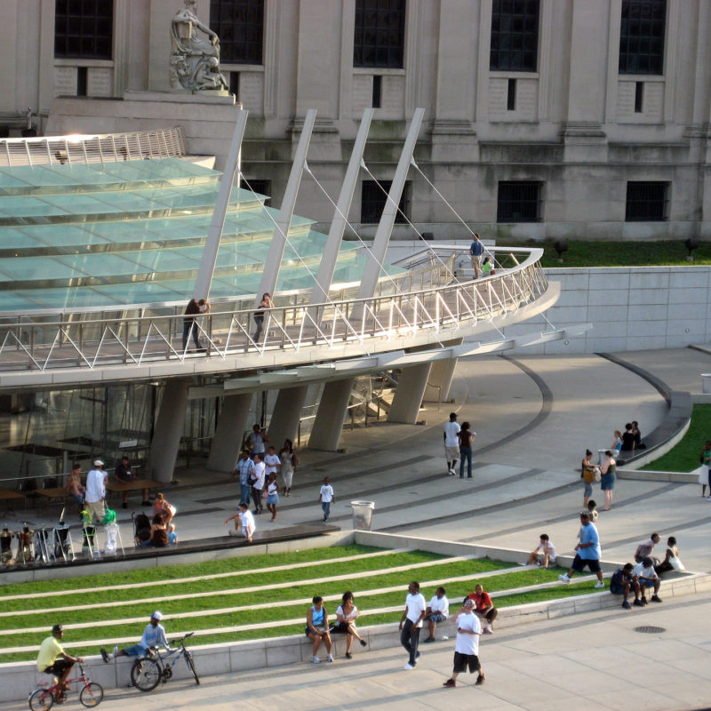
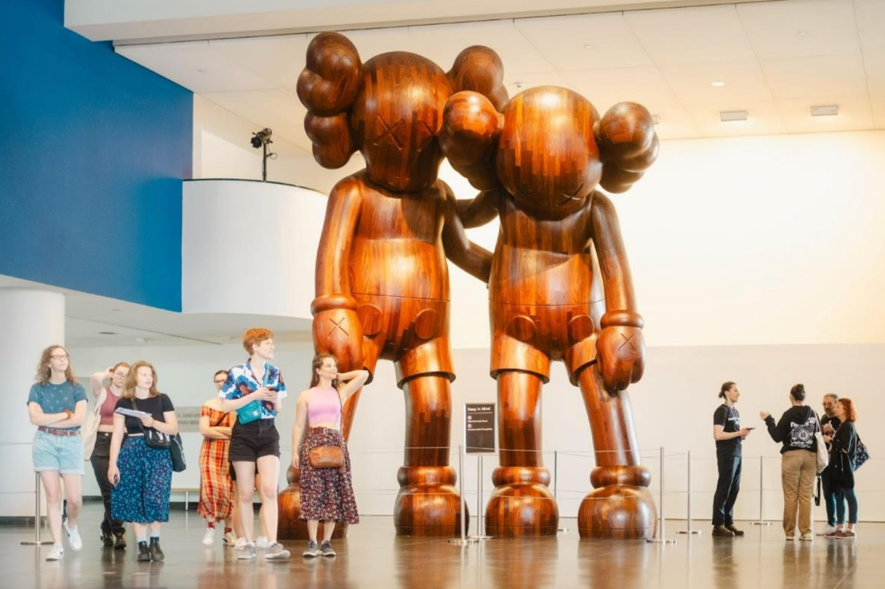
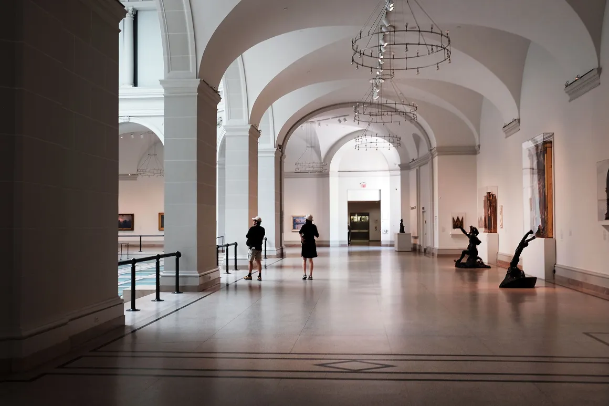

A vibrant museum in Prospect Park showcasing global art, bold contemporary exhibitions, and Brooklyn’s creative spirit.
The Brooklyn Museum is one of the oldest and largest art museums in the United States, known for its wide-ranging collection that spans 5,500 years of global history. Located at the edge of Prospect Park, it was designed to be a major cultural institution for a growing Brooklyn and remains a centerpiece of the borough’s artistic identity. Its galleries cover everything from ancient Egyptian artifacts and classical works to contemporary art, feminist art, and Brooklyn-focused exhibitions that highlight the borough’s diverse communities. The museum’s scale, combined with its commitment to accessibility and social engagement, makes it a vibrant space where history and modern culture meet.
The museum’s history reflects Brooklyn’s evolution. Founded in 1895 as part of a larger cultural campus that included the Brooklyn Botanic Garden and the Prospect Park Zoo, it was envisioned as one of the largest museums in the world. Though that original plan was scaled down, the museum grew steadily, expanding its Egyptian collection, acquiring significant American art, and later becoming a leader in contemporary and socially conscious exhibitions. Over the decades, it developed a reputation for challenging traditional museum boundaries, championing underrepresented artists, and engaging directly with community issues—something that helped define its modern identity.
The appeal of the Brooklyn Museum lies in its blend of world-class art and inviting atmosphere. Unlike some larger institutions that can feel overwhelming, the Brooklyn Museum provides space to explore at a comfortable pace while still offering an incredibly rich collection. Its exhibitions often feel fresh, relevant, and connected to current cultural conversations, drawing visitors who want to experience art that reflects the present as much as the past. Add in its beautiful Beaux-Arts architecture and proximity to Prospect Park, and it becomes a place where art and everyday life coexist naturally.
Someone should visit the Brooklyn Museum because it offers an accessible, engaging, and deeply thought-provoking experience for visitors of all backgrounds. Whether you want to see ancient Egyptian masterpieces, groundbreaking contemporary shows, or rotating exhibitions that highlight global voices, the museum always has something compelling on view. It’s also rooted in Brooklyn’s creative spirit, making it the perfect stop for anyone who wants to experience the borough’s cultural heartbeat. From quiet afternoons wandering the galleries to lively evenings at First Saturdays, the museum welcomes curiosity and connection.
The Brooklyn Museum is significant to New York City because it represents the cultural identity of Brooklyn—a place known for its diversity, creativity, and willingness to push boundaries. It plays a crucial educational role, offers community-centered programming, and champions voices that traditional institutions historically overlooked. As a prominent art museum outside Manhattan, it decentralizes the city’s cultural landscape and makes world-class art accessible to a broader audience. Its long history, global collections, and modern engagement with social issues make it not just a museum, but a defining part of New York’s cultural fabric.



 .jpg)